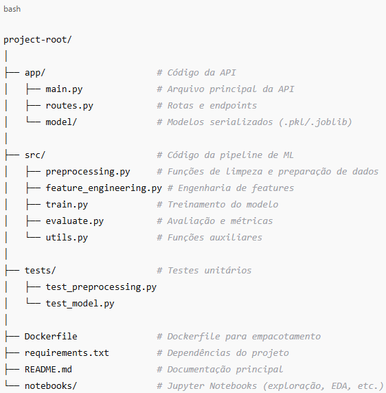

PÓS TECH - DATATHON
Datathon: Case Passos Mágicos
Mudando a vida de crianças e jovens por meio da educação
A Associação Passos Mágicos tem uma trajetória de 32 anos de atuação e trabalha na transformação da vida de crianças e jovens de baixa renda, os levando a melhores oportunidades de vida. A transformação, idealizada por Michelle Flues e Dimetri Ivanoff, começou em 1992, atuando dentro de orfanatos no município de Embu-Guaçu.
Em 2016, depois de anos de atuação, eles decidem ampliar o programa para que mais jovens tivessem acesso a essa fórmula mágica para transformação que inclui: educação de qualidade, auxílio psicológico/psicopedagógico, ampliação de sua visão de mundo e protagonismo. Passaram então a atuar como um projeto social e educacional, criando assim a Associação Passos Mágicos.
A associação busca instrumentalizar o uso da educação como ferramenta para a mudança das condições de vida das crianças e jovens em vulnerabilidade social. Com base no dataset de pesquisa extensiva do desenvolvimento educacional no período de 2022, 2023 e 2024, você tem um desafio de engenharia de Machine Learning para trazer um impacto real na vida dessas crianças.
Você pode conhecer mais sobre o projeto aqui.
Base de dados e dicionário de dados
Você pode encontrar esses materiais aqui.
Sobre a entrega
Para apoiar a missão de transformar a vida de crianças e jovens por meio da educação, você será responsável por desenvolver um modelo preditivo capaz de estimar o risco de defasagem escolar de cada estudante. Como engenheiro(a) de Machine Learning seu desafio é construir todo o ciclo de vida do modelo, aplicando as melhores práticas de MLOps, desde a construção do melhor modelo até o monitoramento contínuo em produção. Sua entrega deve atender aos seguintes requisitos:
- Treinamento do modelo preditivo: crie uma pipeline completa para treinamento do modelo, considerando feature engineering, pré-processamento, treinamento e validação. Salve o modelo utilizando pickle ou joblib para posterior utilização na API. Deixe claro qual é a métrica utilizada na avaliação do modelo, descrevendo por que esse modelo é confiável para ser colocado em produção.
- Modularização do código: organize o projeto em arquivos .py separados, mantendo o código limpo e de fácil manutenção. Separe funções de pré-processamento, engenharia de atributos, treinamento, avaliação e utilitários em módulos distintos para facilitar reuso e testes.
- Crie uma API para deployment do modelo: crie uma API utilizando Flask ou FastAPI e implemente um endpoint /predict para receber dados e retornar previsões do modelo. Teste a API localmente utilizando Postman ou cURL para validar seu funcionamento.
- Realize o empacotamento do modelo com Docker: crie um Dockerfile para empacotar a API e todas as dependências necessárias. Isso garante que o modelo possa ser executado em qualquer ambiente de maneira isolada e replicável.
- Deploy do modelo: realize o deploy do modelo localmente ou na nuvem. Caso utilize um serviço de nuvem, pode optar por AWS, Google Cloud Run, Heroku ou a plataforma de sua preferência.
- Teste da API: teste a API para validar sua funcionalidade.
- Testes unitários: implemente os testes unitários para verificar o funcionamento correto de cada componente da pipeline, garantindo que seu código tenha maior qualidade (80% de cobertura mínima de testes unitários).
- Monitoramento Contínuo: configure logs para monitoramento e disponibilize um painel para acompanhamento de drift no modelo.
- Documentação: sua documentação deve conter os seguintes requisitos:
1) Visão Geral do Projeto
Objetivo: descrever de forma clara o problema de negócio que o modelo resolve (ex.: previsão do risco de defasagem dos estudantes).
Solução Proposta: construção de uma pipeline completa de Machine Learning, desde o pré-processamento até o deploy do modelo em produção via API.
Stack Tecnológica:
- Linguagem: Python 3.X.
- Frameworks de ML: scikit-learn, pandas, numpy.
- API: Flask ou FastAPI.
- Serialização: pickle ou joblib.
- Testes: pytest.
- Empacotamento: Docker.
- Deploy: Local / Cloud (Heroku, AWS, GCP etc.).
- Monitoramento: logging + dashboard de drift (se implementado).
2) Estrutura do Projeto (Diretórios e Arquivos)
A seguir, temos um exemplo:

3) Instruções de Deploy (como subir o ambiente)
Deixe claro as instruções para subir o ambiente; ex.: docker build, docker run, kubectl apply.
- Pré-requisitos (Python version, bibliotecas, etc.).
- Instalação de dependências (requirements.txt ou environment.yml).
- Comandos para treinar, validar e testar o modelo.
4) Exemplos de Chamadas à API
Coloque exemplos de chamadas à API (ex.: via curl, Postman ou scripts Python), com inputs esperados e outputs gerados.
5) Etapas do Pipeline de Machine Learning
Explique brevemente na sua documentação quais são as etapas de pré-processamento da sua pipeline.
Exemplo:
- Pré-processamento dos Dados.
- Engenharia de Features.
- Treinamento e Validação.
- Seleção de Modelo.
- Pós-processamento (se aplicável).
6) Sobre a entrega
A sua entrega deve conter:
- Código-fonte organizado e documentado em um repositório GitHub.
- Documentação do projeto.
- Link para a API.
- Vídeo de até cinco minutos, com pelo menos uma pessoa do grupo, no formato gerencial e com a solução proposta do projeto.